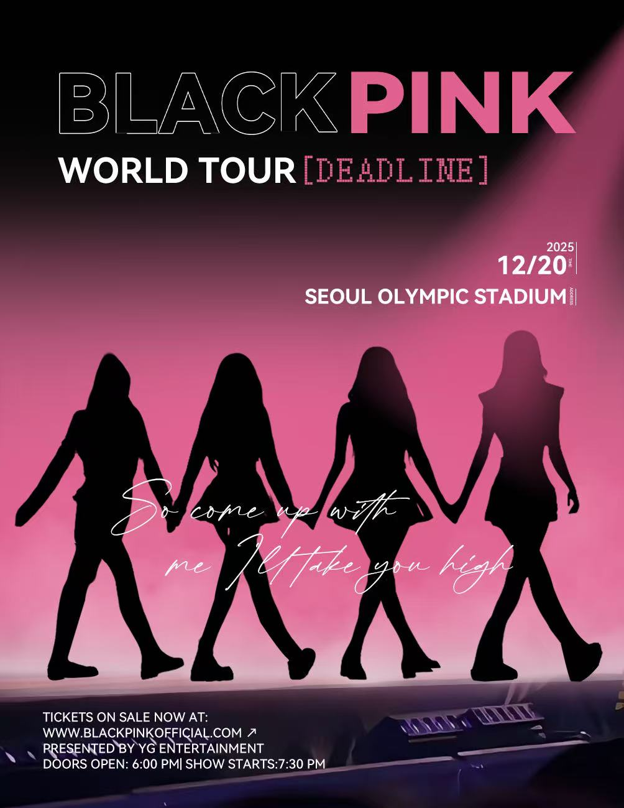

Final Poster

Project Overview
For this project, I made a promotional poster concept for a BLACKPINK concert. I wanted to make this design easy to notice and give it a strong concert atmosphere.
Design Choices
I used black and pink because those colors connect with BLACKPINK. The silhouettes create a simple focal point, while the large title helps people recognize the poster quickly.
Typography and Layout
I made the group name the largest text. The tour title and event details are smaller, so the viewers can follow the information from the top of the poster to the bottom.
What I Learned
This project helped me practice more visual hierarchy, color contrast, and organizing different kinds of text in one design.
Back to All Projects